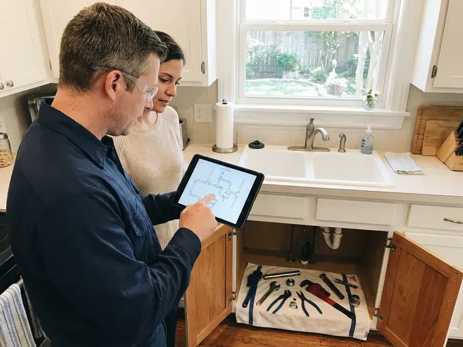

Repipe Specialists in Marysville, WA
For experienced repipe specialists in Marysville, WA, look no further than FHN Plumbing. We handle everything from initial assessment to final installation.
- Quick, Free Estimates
- Code-Compliant Work
- Durable Pipe Materials
- Long-Term Solutions

Upgrade Your Home's Plumbing for Good in Marysville, WA.
Call today and we will inspect your pipes and give you a clear written price.
Skilled Repipe Specialists for Homes in Marysville, WA
FHN Plumbing is your top choice for complete repiping services in Marysville, WA. We understand the challenges homes face, from mineral-heavy water to shifting ground, which can accelerate pipe wear. Municipal water west of the mountains in Washington is generally soft, while supplies on the drier east side tend to run harder. Our team specializes in replacing old, corroded, or damaged plumbing systems with new, high-performance materials.
Our expertise includes:
- Whole-home PEX and copper repiping expertise.
- Copper and PEX piping installs
- Drywall patching, texture matching and new shutoff valves at every fixture

Additional Plumbing Maintenance Services in Marysville, WA
Our maintenance and specialty plumbing services in Marysville, WA protect your home year-round and extend the life of every system.


Customers
Why Choose FHN Plumbing for Repipe Specialists in Marysville, WA?
We give you a single written price that includes permits, materials, labor and drywall patching. There are no hidden charges when the job is done.
- Long-Term Warranty, Our repipes carry solid workmanship and manufacturer warranties.
- Quality Materials, We use only top-grade, durable piping like PEX and copper, ensuring longevity and performance.
- Experienced Crews, Our technicians are highly trained in all aspects of residential and commercial repiping techniques.
Citywide Coverage
Our repipe crews serve Marysville and surrounding communities year-round. We schedule attic work for the most comfortable hours of the day when temperatures are extreme.
Experienced Team
Our repipe specialists have broad experience with various piping materials, from old galvanized steel to modern PEX. They undergo continuous training to stay current with the best repiping practices.
Safety-First Approach
We pull permits for every repipe and schedule required inspections with your local building department. Lines are pressure tested before walls are closed up.
Trusted Certified Marysville Plumbing Services Professionals
At FHN Plumbing, we take pride in providing licensed, certified plumbing services throughout Marysville, WA. Backed by leading industry credentials, our experienced plumbers combine technical skill with genuine customer care. Whether it is repair, installation, or maintenance, we follow strict safety and quality standards to deliver long-lasting results you can trust.
Call Us Now PHCC Plumbing Contractor Recognition
PHCC Plumbing Contractor Recognition Better Business Bureau (BBB) Accreditation
Better Business Bureau (BBB) Accreditation Angi Certified Pro
Angi Certified Pro ISO 9001 Quality Management Certification
ISO 9001 Quality Management CertificationReliable Repipe Specialists Services in Marysville, WA
Efficient PEX Repiping in Marysville, WA
PEX (cross-linked polyethylene) is a flexible, cost-effective, and highly popular choice for repiping projects in Marysville, WA. Its flexibility allows for fewer connections, reducing potential leak points and making installation quicker and less intrusive than traditional rigid pipes. PEX is also very resistant to freezing, scaling, and chlorine, common issues in many water systems. We use high-quality PEX-A or PEX-B tubing, installed with durable crimp or expansion fittings, to create a reliable and efficient plumbing network throughout your home.

Whole-Home Copper Repiping in Marysville
Copper piping offers exceptional durability, corrosion resistance, and a long lifespan, making it a premium choice for many homeowners in Marysville. While the upfront cost is higher than PEX, copper provides superior rigidity and resistance to UV light if exposed. Our team carefully solders each joint, creating a leak-proof and robust plumbing system that can withstand the test of time, including changing temperatures and local water conditions. Copper also inherently inhibits bacterial growth, contributing to cleaner water.
Residential Repiping Experts in Marysville
For any residential property in Marysville experiencing plumbing problems due to old, failing pipes, FHN Plumbing offers custom repiping services. We assess your home's specific needs, considering factors like water pressure, family size, and future expansion plans, to recommend the best repiping strategy. Our goal is to provide a durable, efficient, and code-compliant plumbing system that improves your home's comfort and prevents future plumbing emergencies, keeping a reliable water supply throughout your property.
Emergency Repipe Services in Marysville, WA
Sometimes a pipe burst or widespread failure calls for an immediate repipe. FHN Plumbing offers emergency repipe services for critical situations in Marysville, WA. While a full repipe is a significant project, our team can quickly assess the damage and provide temporary solutions while planning the full replacement. We work efficiently to restore your plumbing system and limit disruption during an unexpected crisis, ensuring your home safe and functional.
Polybutylene Plumbing Replacement in Marysville, WA
Polybutylene pipes, installed in many homes between the 1970s and 1990s, are notorious for premature failure due to chemical reactions with disinfectants in the water supply. If your home in Marysville, WA has polybutylene, a full replacement is essential to prevent catastrophic water damage. FHN Plumbing offers specialized polybutylene plumbing replacement, carefully removing the old, brittle pipes and installing a dependable new system.
Commercial Repiping Services in Marysville, WA
Commercial properties in Marysville, WA have specific demands for their plumbing systems, often requiring larger pipe diameters and more complex layouts. FHN Plumbing provides specialized commercial repiping services to help your business operates smoothly without plumbing interruptions. We understand the importance of minimal downtime and work efficiently to upgrade your facility's water lines with durable materials like copper or high-grade PEX, meeting all commercial building codes and operational requirements.
Repipe Costs Versus Leak Repairs in Marysville, WA
A whole-home PEX repipe for an average home often runs $5,000 to $12,000, with copper usually costing more. A single slab leak repair can run $1,000 to $4,000 including access and restoration. After two or three leaks, a repipe often pays for itself. We give you a side-by-side comparison so you can make the call.

PEX-A Whole-Home Repiping in Marysville
PEX-A tubing is flexible, resists scale buildup and handles thermal expansion well, which suits hard water. We use Uponor or similar PEX-A with cold expansion fittings that open up the full pipe diameter. Long continuous runs mean fewer joints in walls and attics. Most homes are repiped with PEX in two to three days.
Trusted Repipe Specialists Near Me in Marysville, WA
When you search for 'repipe specialists near me' in Marysville, you want a local team that knows the area's plumbing infrastructure and building styles. FHN Plumbing is deeply familiar with Marysville homes, from their foundation types to their water supply characteristics. This local knowledge allows us to provide more precise assessments and efficient repiping solutions.
When searching for 'repipe specialists near me' in Marysville, WA, you want a company that understands local homes and plumbing needs. FHN Plumbing is deeply rooted in the community, providing tailored repiping solutions for our neighbors.
FHN Plumbing at a Glance
- Licensed and insured plumbers serving Marysville, WA
- Same-day appointments and 24/7 emergency response
- Upfront, flat-rate pricing before work begins
- 4.9-star rated by 382+ Washington customers
Marysville Map
Marysville Information
- Population
- 72,916
- Area codes
- 360/425/206
- Service area
- Marysville and communities within 40 miles
- Nearby
- Everett, Bothell, Shoreline, Mount Vernon
Repiping is a crucial upgrade for many homes in Marysville, WA, where water chemistry, ground movement and aging pipe all take a toll on the original plumbing. Municipal water west of the mountains in Washington is typically soft, while supplies on the drier east side tend to run harder.
Expert Services
Trust our professionals for reliable FHN Plumbing solutions in Marysville, WA.
Our Specialized Plumbing Services in Marysville, WA
At FHN Plumbing, we provide a complete range of plumbing services across Marysville, WA. From leak detection to full system installations, our team ensures fast, precise, and affordable service for both residential and commercial properties. Explore our core services below:


How Our Repipe Specialists Process Works in Marysville, WA
Our repipe process is planned in detail so you know what happens every day.
Request a Quote
Start by calling (425) 491-3131 to schedule a free, no-obligation consultation at your Marysville home. Our repipe specialist will visit to assess your current plumbing system and discuss your needs.
Detailed Inspection
We conduct a thorough inspection of your existing pipes, identifying problem areas, material types, and potential challenges. We'll then provide a detailed estimate outlining material options like PEX or copper, scope of work, and the project timeline.
Professional Installation
Our licensed plumbers carefully remove old piping and install your new plumbing system, following all Washington and local Marysville codes. We work efficiently, minimizing disruption, and ensure proper functionality and water pressure.
Frequently Asked Questions About Repipe Specialists in Marysville
The cost of a whole-home repipe in Marysville varies significantly depending on the size of your home, the number of fixtures, and the chosen material (PEX or copper). Generally, you can expect to pay between $4,000 and $15,000 for a PEX repipe, and $8,000 to $25,000 or more for copper. We provide a detailed, itemized quote after an on-site assessment.
Common signs you need repiping include persistent low water pressure throughout your home, discolored or rusty-looking water, frequent pipe leaks, visible corrosion on exposed pipes, and a metallic taste or odor in your water. If your home is over 50 years old with original pipes, it's a good idea to have them inspected, especially if they are galvanized or polybutylene.
Repiping is a complex plumbing project that requires specialized tools, knowledge of plumbing codes, and real experience. Attempting a DIY repipe can lead to costly mistakes, leaks, and potential code violations. It's strongly recommended to hire professional repipe specialists like FHN Plumbing to make sure the job is done correctly, safely, and to code.
Municipal water west of the mountains in Washington is generally soft, while supplies on the drier east side tend to run harder. Hard water can lead to mineral buildup, or scale, inside pipes over time. This buildup constricts water flow, reduces pressure, and can accelerate corrosion, especially in older metal pipes. Repiping with materials like PEX or properly installed copper, along with considering a water softener, can mitigate these effects and extend the life of your plumbing system.
FHN Plumbing stands behind our repiping work with a solid warranty on both labor and materials. Specific warranty details will be provided with your estimate, but generally, you can expect a multi-year warranty covering defects and leaks. We use only quality, warrantied piping materials from trusted brands.
FHN Plumbing stands behind our repiping work with comprehensive warranties covering both labor and materials. The specific terms of your warranty will be provided in your detailed estimate. We use high-quality materials from trusted brands like Uponor PEX and Mueller Streamline copper, ensuring long-term reliability for your new plumbing system in Marysville, WA.
While some minor wall and ceiling access is usually necessary for a repipe, our repipe specialists use techniques that limit damage. We carefully cut access points and patch them neatly after the new pipes are installed. We aim to keep disruptions to your home's finishes as minimal as possible during the process.
A documented repipe can make your home easier to sell and insure, especially when replacing polybutylene or Kitec. Buyers and inspectors notice it.
What People Are Saying About Our Plumbing Experts?

Mark T.
When our office needed drain cleaning, FHN Plumbing provided quick, reliable service. The plumber arrived on time and made sure every drain flowed perfectly before leaving. Very satisfied.
Drain Cleaning · Redmond, WA
Robert G.
The trenchless sewer replacement saved our front yard. They walked us through the camera inspection footage first so we knew exactly what we were paying for.
Sewer Line Replacement · Marysville, WA
Sofia M.
Two new toilets installed in one visit, no mess left behind, and the tech even adjusted a faucet he noticed was dripping. Fair pricing and really friendly.
Toilet Installation · Redmond, WAJames P.
Our commercial plumbing system had a leak under the sink, and FHN Plumbing handled it professionally. The plumbers arrived quickly and restored everything without disruption to our customers.
Commercial Plumbing · Everett, WA
Emily R.
I called FHN Plumbing for plumbing repair, and the technician was fast, polite, and thorough. They explained the problem clearly and fixed it the same day. I will definitely hire them again. Highly recommended!
Plumbing Repair · Bothell, WA
Daniel K.
A pipe burst at 11 pm and they actually answered. The plumber showed up within the hour, shut everything down, and had us back to normal the next morning. Could not ask for more.
Emergency Plumbing · Kirkland, WA